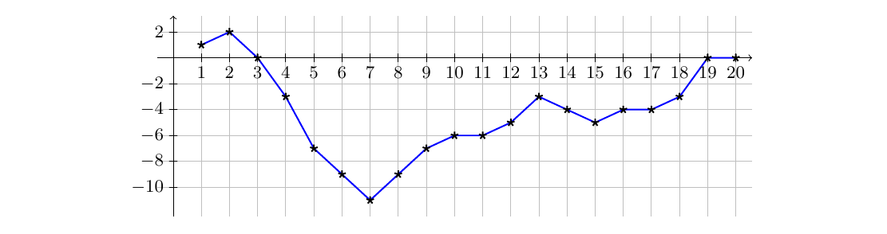
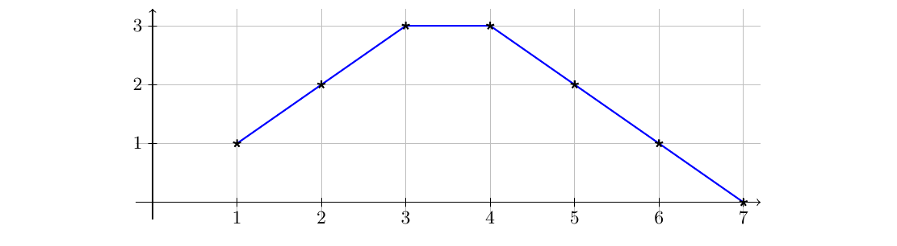

ICPC World Finals 2020 · Problem E
Interactive Creative Players Collective (ICPC) is working on a new computer game for which they want to generate realistic landscapes. One of the ICPC engineers proposed an algorithm inspired by geological processes. The algorithm starts with a flat landscape and repeatedly modifies it by lifting or lowering continuous blocks, thus forming horsts (lifted blocks) and grabens (lowered blocks). The blocks to be lifted or lowered are selected at random. ICPC hopes to obtain realistic landscapes this way.
Your task is to interpret any sequence of such modifications and output the resulting landscape. The landscape is represented by a sequence of n integer height values, one for each integer point from 1 to n on the x-axis. Figure E.1 illustrates an example by connecting the height values with line segments.

Initially the height is 0 at all n points. This flat shape is subjected to a sequence of modifications. Each modification applies one of the following four operations with two integer parameters x1 ≤ x2:
Adding a hill to the current landscape works as follows. The heights at points x1 and x2 are increased by 1. If x2 − x1 > 1, the heights at points x1 + 1 and x2 − 1 are increased by 2. If x2 − x1 > 3, the heights at points x1 + 2 and x2 − 2 are increased by 3, and so on. Figure E.2 shows an example. Adding a valley works in the same way except the heights are decreased instead. The maximal change of height happens in the middle between x1 and x2. If x2 − x1 is odd, there will be two neighboring points with maximal change, otherwise just one.

The first line of input contains two integers n and k, where n (1 ≤ n ≤ 200 000) is the number of points, and k (0 ≤ k ≤ 200 000) is the number of modifications. The n points along the x-axis are numbered from 1 to n. The next k lines describe the modifications. Each line contains one character c and two integers x1 and x2, where c (one of R, D, H or V) designates the operation and x1 and x2 (1 ≤ x1 ≤ x2 ≤ n) specify its parameters.
Output n lines, where the ith line contains the height at point i after applying all modifications in the given order.
20 13 H 12 13 D 5 18 R 13 14 R 8 16 H 2 3 V 10 19 V 3 13 R 8 13 V 3 10 D 5 18 V 11 12 R 1 6 R 14 19
1 2 0 -3 -7 -9 -11 -9 -7 -6 -6 -5 -3 -4 -5 -4 -4 -3 0 0
7 1 H 1 6
1 2 3 3 2 1 0